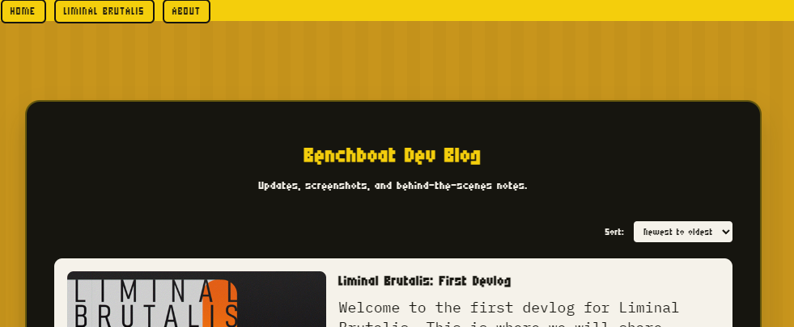
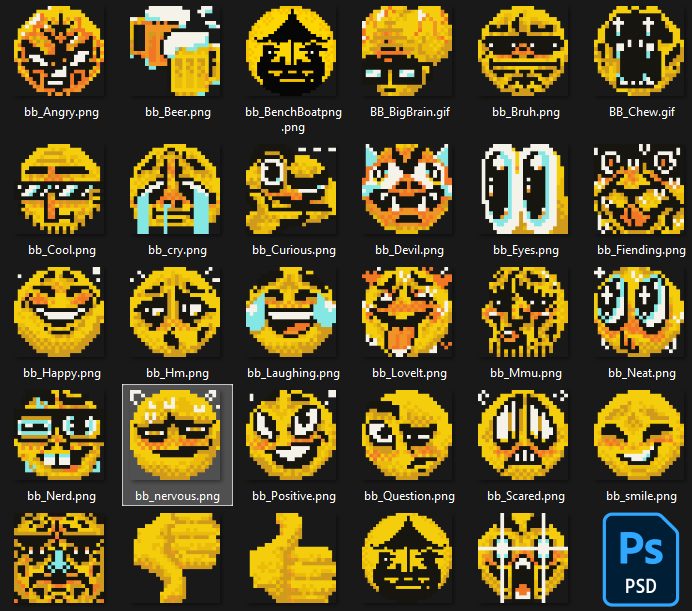
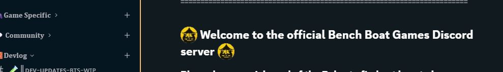

New site, emojis & More
February 5, 2026
So, I finally gabe the Bench Boat Games site a clean-up! This includes additions such as the brand new 'BLOG' section (Which you are reading right now wow!) and a offical page for 'Liminal Brutalis: Physical Agility' a game which has been in progress for quite some time now.
I also made the decision to "reveal" the first 'Teaser trailer' I made for it 2 years ago. More on that later
On another note, I've slowly been working towards something that resembles a proper Discord server, with that ofcorse comes a roster of "Bench Boat Games exclusive" Emotes.
The server is still closed for private invites only while we test it.
On that note, thanks for reading the Third (Probably first, real, post). I'm still trying to figure out how to best set this up, It's all manual .html right now lol. - Cheers, Casper (Art Man)